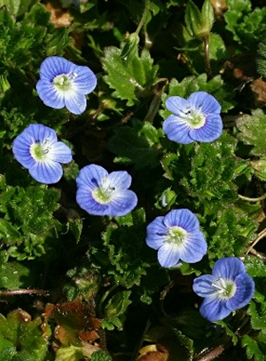

オオイヌノフグリ
基本データ
- 日本名：おおいぬのふぐり（大犬の陰嚢）
- 科目 ：オオバコ科
- 学名 ：Veronica persica
| 生息地 | 道端、畑のあぜ道 | |
| 大きさ | 10～20cm | |
| 花の咲く時期 | 2～5月 | |
| 花の色 | 青色 | |
| 花びらの枚数・形 | 4枚 |
名前の由来は、種の形が雄犬のフグリ(陰嚢)に似ていることから名付けられた。オオイヌノフグリはヨーロッパ原産の帰化植物で、元から生息していたイヌノフグリは、現在絶滅危惧種に指定されている。かわいらしい青い花が咲くことから別名「星の瞳」と呼ばれている。